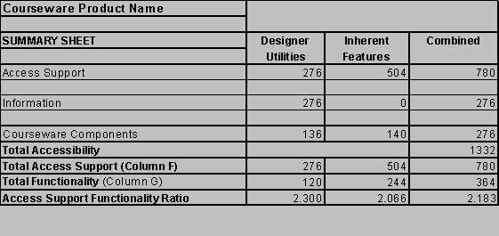

Scoring System
Accessibility is evaluated in conformity with the WAI Web Content Accessibility Guidelines.
Below is a description of accessibility prioroty levels. Each checkpoint has a priority level assigned by the Working Group based on the checkpoint's impact on accessibility. The following is an excerpt from the Web Content Accessibility Guidelines 1.0,W3C Recommendation 5-May-1999, outlining priority levels and conformance criteria set out by the WAI working group.
- [Priority 1]
A Web content developer must satisfy this checkpoint. Otherwise, one or more groups will find it impossible to access information in the document. Satisfying this checkpoint is a basic requirement for some groups to be able to use Web documents. - [Priority 2]
A Web content developer should satisfy this checkpoint. Otherwise, one or more groups will find it difficult to access information in the document. Satisfying this checkpoint will remove significant barriers to accessing Web documents. - [Priority 3]
A Web content developer may address this checkpoint. Otherwise, one or more groups will find it somewhat difficult to access information in the document. Satisfying this checkpoint will improve access to Web documents.
- Conformance Level "A": all Priority 1 checkpoints are satisfied;
- Conformance Level "Double-A": all Priority 1 and 2 checkpoints are satisfied;
- Conformance Level "Triple-A": all Priority 1, 2, and 3 checkpoints are satisfied;
Both Access Support and Information are assessed on a scale of 0-4, as summarized below. In addition, the WAI Checkpoint priority ranking is factored into the score to provide an appropriate weight for the most critical accessible authoring practices. If a feature received a Priority 1 rating from WAI, the score is multiplied by three. If a feature received a Priority 2 rating the score is multiplied by two. If a feature received a Priority 3 rating no weight is applied.
|
0 |
This feature is not supported |
|
1 |
This accessible authoring practice is: 1) not provided by this courseware package |
|
2 |
This accessible authoring practice is 1) provided by this courseware package |
|
3 |
This accessible authoring practice is 1) provided by this courseware package 2) conspicuous in the designer/instructor interface |
|
4 |
This accessible authoring practice is 1) provided by this courseware package 2) conspicuous in the designer/instructor interface 3) prompted or required by the interface |
*Access Support and Information scores are multiplied by the WAI checkpoint Priority Ranking of 1, 2 or 3.
|
0 |
No information is provided for this accessible authoring practice. |
|
1 |
This accessible authoring practice: 1) is mentioned in the Help System of the courseware package |
|
2 |
This accessible authoring practice 1) is mentioned in the Help System of the courseware package 2) has context sensitive prompting |
|
3 |
This accessible authoring practice: 1) is mentioned in the Help System of the courseware package 2) has context sensitive prompting 3) includes explanations in the Help System |
|
4 |
This accessible authoring practice: 1) is mentioned in the Help System of the courseware package 2) has context sensitive prompting 3) includes explanations in the Help System 4) has explanatory examples |
The scores for each product must be viewed in terms of Access Support and Functionality. If a product has little functionality but is highly accessible, its usefulness as an authoring tool will be lacking. On the other hand if a product is highly functional, or provides design interfaces for a wide variety of features, it must also include provisions for accessible design, otherwise it adds to the inaccessibility of the Web. A balance must be reached between the number of design features, and their support of accessible design. Providing designers with prompts, prominent accessibility design options, and help files explaining how and why these options should be implemented, educates designers about accessibility issues. Educated designers will be more likely to include accessibility as an integral part of Web based instructional designs; the experience of accessible Web based instruction will be passed on to future Web designers.
Course Features Accessibility (Courseware)
In addition to assessing accessibility of designer controlled and courseware controlled features, which could be assessed on any HTML authoring tool, course-authoring packages are assessed by their pedagogical features. These components are divided into content and communication tools. Scoring is on a 0 to 4 scale, and like scoring above, access support scores for designer controlled and inherent features are assigned to each of seven components outlined below. Partial scores are awarded where some provisions have been made for accessibility, but where improvements could be made. For example, providing default ALT text for Home Page images inserted by the program, but not where inserted by the designer, might be awarded a score of 2 out of 4. This might be the case where a default button bar is provided with ALT text but additional buttons added by the designer have no way to include it.
Component accessibility is divided into content accessibility and communication accessibility. Content components include:
Each of these are awarded points on a 0 to 4 point scale:
- Provision made for ALT text with images, or provides by default.
- Provision made to provide alternative text links for linked images, or provides by default.
- Tables used correctly to format layout of the page.
- Does not use frames or Java, or does provide an alternative to them.
Scores should be viewed as a group of scores rather than a single score. The Summary Sheet below contains the maximum scores obtainable. For those who want a quick assessment of a product's support of accessible design, the combined Access Support functionality ratio will give you that. A quick comparison summary is available. For designers and instructors the individual Combined Access Support, Functionality, and Accessibility scores will provide an indication of a product's complexity and how well it will support you in creating accessible Web documents. For developers, or those looking for specific strengths and weaknesses, individual scores on the summary sheet can be compared across packages, or the entire evaluation as zipped Excel 97 tables can be downloaded for comparison.
